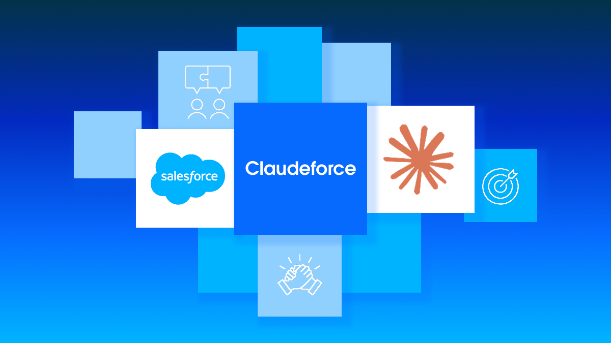

Executive Summary
On August 26, 2026, Salesforce and Anthropic announced an expanded partnership under the name Claudeforce. Half of it runs in the direction the industry already knows. Claude becomes the reasoning model inside Agentforce and the default model for Slack. Where Claude runs on the Salesforce product side, it is delivered through Amazon Bedrock inside what Salesforce calls its Trust Boundary. That path is the condition regulated customers set before they let a model near their records.
The other half runs backwards. Salesforce packaged 37 prebuilt sales skills into a plugin and shipped it inside Claude's own interface. A company that has spent twenty-five years arguing that its screen is where enterprise work happens agreed to become a component inside someone else's. What it did not hand over is the execution path. Salesforce in Claude routes actions through Salesforce so that business rules are enforced at the moment an action is taken.
Where the user is looking and where an action gets approved are two separate decisions. In this announcement Salesforce let go of the first and held on to the second. Most of what a buyer needs to check before signing with an AI vendor sits on that second side too.
Key numbers
Four numbers recur through the announcement. The first two describe what the product looks like. The second two describe how much the two companies had already invested in each other before any of this was public.
Sources: Salesforce press release (2026-08-26) and TheNextWeb (2026-08-27)
37
Sales skills running inside Claude
Meeting prep, deal health review and pipeline review, the recognisable parts of a sales week. Built jointly by Salesforce and Anthropic
Once
Times an admin connects it
Authentication and permissions are managed centrally, so every seller gets access from day one with no per-user setup, no new permissions model and no re-auditing account by account
$300M
Expected Anthropic token spend this year
A measure of how deep the relationship already ran before the announcement. Salesforce also holds a stake in Anthropic now valued at about $5bn
8.1M hours
Annualised productivity from Slackbot
An internal Salesforce figure, up over 2x quarter over quarter. The press release says Claude is the model powering Slackbot
Claudeforce opened three directions at once
The press release bundles three integrations. First, Salesforce in Claude, a plugin carrying 37 prebuilt sales skills that let sellers reason over live revenue context, automate pipeline updates and take governed action from inside Claude. Second, Claude inside Salesforce, where it serves as a reasoning model for the Atlas Reasoning Engine, powers Agentforce Vibes and Agentforce Coworker by default, and is selectable in Agent Builder. Third, Slack, where Claude becomes the default model, powers Slackbot, augments team decisions through Claude Tag, and joins Slack Code as a founding partner.

Salesforce is not the first large vendor to make Claude a default. TheNextWeb makes that point first, then argues that what stands out here is the breadth, covering the reasoning engine, the agent builder and the messaging product in one go. The same piece notes that the Agentforce-side integrations were already live on the day of the announcement.
The part that actually makes the three directions work sits underneath them. Salesforce writes that Salesforce in Claude is made possible by AIforce, a harness that brings business data and workflows to any agent through MCP servers, APIs and CLI tools. This is the vendor filling in the authorization and connection layer that protocol standardisation left unfinished, and it is the same gap the Pebblous blog flagged as the enterprise's problem when it covered A2A and MCP moving under one foundation. Here it shows up as a product spec.
A fourth item in the release covers mutual adoption. Salesforce is Anthropic's preferred CRM, and Anthropic's internal communication, workflows and agents run through Slack. The release then names products: "Salesforce Shield, Backup, and Sandboxes support security, resilience, and development." The company building the model has taken on its partner's security suite as well. Going the other way, Salesforce will make Claude Code and Claude Enterprise available to all of its developers and knowledge workers. Each company sells to the other while buying from it. On timing, Salesforce in Claude is with select pilot customers now, open beta is expected in September 2026, and additional prebuilt skills begin launching in late 2026. No pricing was disclosed for any part of the announcement.
Claudeforce went public on the same day as Salesforce's Q2 FY27 earnings, and CRM stock surged in extended trading. On the earnings call, chair and CEO Marc Benioff aimed at the prevailing narrative about AI eating business software: "This nonsense of the SaaSpocalypse, I think it's time for it to stop." The architecture was his answer to it.
Salesforce dropped a twenty-five-year premise
Enterprise AI deployments usually move in one direction. The customer's data stays where it is, and the model comes inside a perimeter the customer has already vetted. Reaching Claude through Bedrock inside the Salesforce Trust Boundary is exactly that shape. What is new in this announcement runs the other way. The company holding the data picked up its own functionality and walked into the model company's interface.
The release frames the move as a change in what software is: "For decades, enterprise software required users to manually navigate static UI to get work done. Now that agents can access the data, workflows, and rules directly, software is a system that powers every interface." That is the seller's language and does not have to be taken at face value. But the fact that Salesforce has started naming the screen and the system separately maps precisely onto the structure of this deal.
TheNextWeb calls this the more interesting half of the announcement. Salesforce has spent twenty-five years insisting that its interface is where enterprise work happens, and it has just agreed to become a component inside somebody else's. The same piece adds that this is not obviously a concession, because the alternative is being routed around entirely. If sellers are going to start the day in a chat interface anyway, appearing there with governed write access beats being the system they alt-tab to afterwards.
The numbers make the decision look less sudden. Salesforce expects to spend around $300mn on Anthropic tokens this year, on top of a stake in Anthropic now valued at about $5bn. What Anthropic gets is distribution. Salesforce and Slack together sit inside a very large share of enterprise sales and support work, which is a substantial amount of daily usage to acquire through a single agreement.
Dario Amodei, Anthropic's CEO and co-founder, said: "Through this partnership, companies can point Claude at the customer information and business context that they've been building in Salesforce for decades, and use it to actually run and grow their businesses." TheNextWeb read that as framing from the data side. The model is not migrating anywhere; it is being pointed at data that already exists.

The risk that remains comes from the same article. Making a supplier's model the default across your product line, and your product a feature of theirs, is a deep bet on that supplier remaining a partner. It is also a question Salesforce staff had already been asking about the Claude Tag in Slack.
The screen moved and the permissions stayed
Handing over the interface is not the same as handing over enforcement. The release puts it this way: "No two companies run sales exactly the same, so Salesforce in Claude routes actions through Salesforce to help ensure business rules are always enforced when an action is taken." Update a pipeline from the Claude window and the request still passes through the Salesforce rules engine, and the record of that pass stays there too.
The same distinction sits inside Benioff's quote in the release: "Here, the UI is the AI — allowing you to build custom apps dynamically and answer any enterprise question. Probabilistic intelligence alone doesn't run a company, and deterministic systems don't reason." One sentence gives the screen to the AI, and the next one says a layer that enforces rules is still sitting underneath it. Both halves of the deal are in a single paragraph.
This routing is not an exception carved out for one plugin. The release describes the same shape for Slack: "Rather than managing disparate tools, teams can now reason through complex decisions alongside Claude in Slack and instantly execute governed, high-value actions in Salesforce — all without ever leaving the flow of work." The number of windows a conversation can open in keeps growing. The place where execution converges stays at one.
An admin connects Salesforce in Claude a single time, authentication and permissions are managed centrally, and every seller on the team gets access from day one, with no per-user setup, no new permissions model to build and no re-auditing account by account. Building no new permissions model means the existing one remains the reference. TheNextWeb reads the governance language as doing real work here: an agent that can read a pipeline is a demo, whereas one that can update it needs permissions, an audit trail and an administrator able to revoke it, which is the part enterprise buyers have been waiting on.
The path running the other way carries one thing that is easy to misread. Through Amazon Bedrock, Claude is available within the Salesforce Trust Boundary, allowing customers, including those in regulated industries, to deploy domain-specific AI while keeping data and AI workloads secure. Salesforce owns that boundary. This is not each customer confining a model inside its own virtual private cloud. It is a single shared perimeter that Salesforce operates and that customers have already cleared through vendor review. The release states that Claude is the first LLM provider fully integrated within the Salesforce Trust Boundary.
The skills went toward Claude. The execution requests that start in the Claude window, and the records they leave, come back toward Salesforce. Put the two paths side by side and the shape of the deal is right there.
The screen a user works in and the point where an action is approved do not have to be the same place. This deal pulls them apart, and once separated, it pins the side that keeps the records to the company that holds the data. What actually got priced in the negotiation was that anchor, not which model reasons better.
What to ask before the next AI contract
Few companies negotiate from where Salesforce sits. The list of questions this case clarifies, though, works at any size. Whether to bring the model to your data or send your data to the model looks like a line on an architecture diagram, but the answer always turns on the records. Four things are worth settling before sitting down with an AI vendor.
- • When the agent writes, whose rules engine does the request pass through? Is there any path left where it executes without passing through one?
- • Which system holds the audit log, and can you still read that log after the contract ends?
- • Which side has the administrator who can revoke access, and does a revocation take effect immediately in the other party's interface?
- • If the connection happens once, can you get an itemised list of what that one connection opens up? Not having to re-audit is a convenience that can also mean there is no way to re-audit.
If all four answers point back at your own systems, governance holds no matter where the interface lives. If the answers start pointing at the vendor, control has already moved even while you still own the screen. Salesforce gave up the screen in this announcement and kept all four. That was the substance of the deal.
Editor's Note: The order is the same one Pebblous keeps running into in data quality work. If you never record where a value came from and who changed it when, the ability to verify that value later disappears. Once agents start updating data, that recording problem moves out of quality management and into contracts. Writing down which system holds the records is what comes first.
How Claudeforce actually behaves is still open, and the two directions run on different clocks. Claude inside Agentforce was already running on announcement day, while Salesforce inside the Claude window is with select pilot customers only. Open beta is due in September and more skills arrive at the end of the year. What to check then is what the audit log captures rather than the count of skills. How an action started in the Claude window is written into the Salesforce record, and whether that record alone lets someone reconstruct what happened, is the real report card for this design.
References
- 1.Salesforce. (2026). "Salesforce and Anthropic Announce Claudeforce." Salesforce Newsroom, Aug 26, 2026.
- 2.Stan, A. M. (2026). "Salesforce and Anthropic's Claudeforce Partnership." TheNextWeb, Aug 27, 2026.
- 3.SalesforceBen. (2026). "Salesforce and Anthropic Announce Claudeforce In Q2 '27 Earnings." SalesforceBen, Aug 28, 2026.